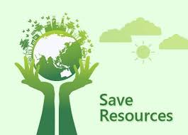

Save Natural Resources
Why We Need to Save Natural Resources
Natural resources are essential for human survival and well-being. They provide us with food, water, shelter, and energy. However, many natural resources are finite and are being depleted at an alarming rate. We need to conserve natural resources to ensure that they are available for future generations.
How to Save Natural Resources
There are many ways to save natural resources. We can reduce our consumption of water by taking shorter showers and fixing leaks. We can save energy by turning off lights and appliances when not in use. We can recycle paper, plastic, and other materials to reduce waste. We can also choose to buy products that are made from sustainable materials and are environmentally friendly.
